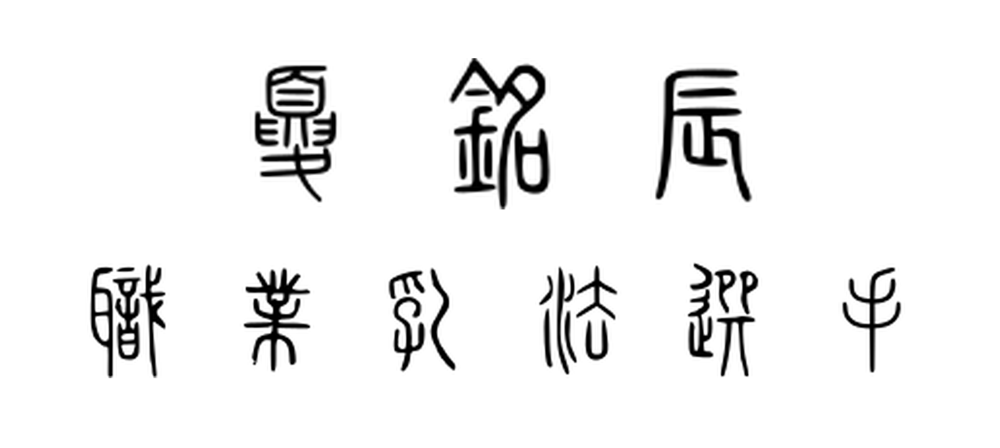

Chapter 1 · Conventions and prerequisites · Tag 2B19EC9348CF
Reading guide.
This book is not an elementary introduction to pluripotential theory. It should not be the reader's first textbook in this field. The reader is expected to be comfortable with the basic pluripotential theory at the level of [GZ17], which is essentially the only prerequisite for the main body of the book.
This book is not “a compilation of all the author's works”. Rather, it presents a new point of view on this theory, with new results and new insights. A reader who has gone through all my related papers is still encouraged to read at least part of this book.
This book is not an encyclopedia of pluripotential theory. For example, the reader would not find the definition of a pseudoconvex domain, nor the full details from the long research papers or books I depend on in the application part. These points irritated the referee, but I hope that these omissions are understandable, taking into account that this book is already over 500 pages long. Although I tried my best to make the book as self-contained as possible, certain proofs based on techniques far beyond the scope of this book are still omitted.
Results in this book are presented in the greatest possible generality. An expert reader may use this book as a convenient reference for the most general statements, and skip the proofs of the more general results if they are already familiar with them in a special case.
The reader is expected to read Part II linearly, and consult the necessary preliminaries in Part I when necessary.
A reader interested only in one application chapter may skip directly to it once the relevant Part II prerequisites are in place. chapter 5 is needed only for chapter 12; it can otherwise be skipped without loss.
Some chapters in this book draw on more specialised background, recorded in the appendices: chapter A for convex analysis, chapter B for pluripotential theory on unibranch Kähler spaces, and chapter C for the almost-semigroup machinery underlying the partial Okounkov body construction.
In order to develop the theory of b-divisors as in chapter 11, we need to take limits with respect to the net of all modifications of $X$. In general, this net does not admit a cofinal sequence. As a consequence, nets are widely used in this book, and the reader is expected to be familiar with their basic properties. The books [Wil70, Kel75] are good references for the basic theory. It is essential to remember that the dominated convergence theorem and Fatou's lemma both fail for nets. A version of the monotone convergence theorem does hold, as in [Proposition 7.12, Fol99].
I made a great effort to make sure that every single expression involving $(-\infty )-(-\infty )$ or $0\cdot \infty $ is explained. This point is often overlooked in the literature. In most cases, the fix is simple, but in some cases, it requires a non-trivial amount of work. Therefore a number of our proofs seem more complicated than in the original papers. Similarly, in the literature, many constants are only correct up to a constant involving $2$ or $\pi $. I tried to make sure that every constant in this book is correct, and hence there is an extensive discussion of the normalizations of various objects in chapter 1, which again irritated the same referee. I hope that the reader will appreciate the effort and find the book more readable as a result.
Comments and questions are always welcome, and I will maintain an errata page on my homepage as long as I am still alive, no matter whether I remain in academia or not.
in Hangzhou, March 2024
Contact information:
Mingchen Xia, Institute of Geometry and Physics, USTC
Email address: xiamingchen2008@gmail.com
Homepage: https://mingchenxia.github.io/.

The clerks are French, and, like most French people, are in a bad temper till they have eaten their lunch. — George Orwell (1903–1950)